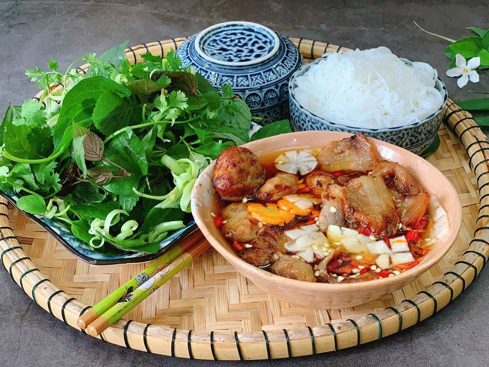
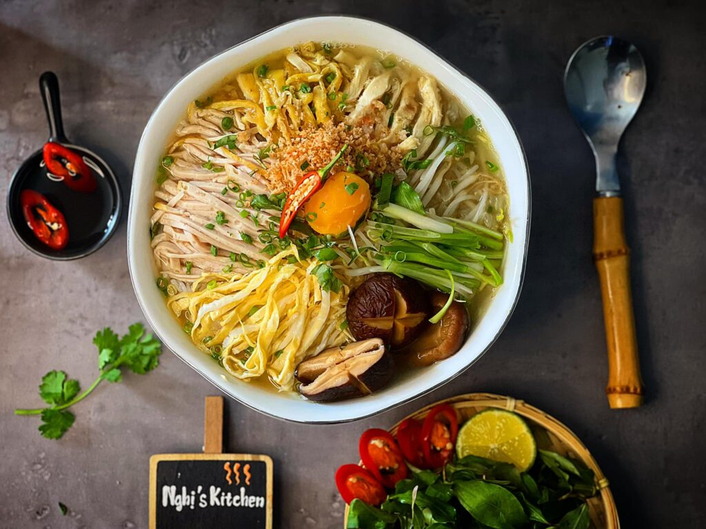

Phở Bò Hà Nội
Món ăn quốc hồn quốc túy với nước dùng thanh ngọt ninh từ xương, bánh phở mềm và thơm mùi hành hoa.
Hương vị tinh tế nét văn hóa ngàn năm văn hiến
Món ăn quốc hồn quốc túy với nước dùng thanh ngọt ninh từ xương, bánh phở mềm và thơm mùi hành hoa.

Chả miếng và chả viên nướng đậm đà trên than hồng, ăn kèm bún tươi, rau sống và nước chấm chua ngọt.

Được mệnh danh là "tác phẩm nghệ thuật", bún thang gồm nhiều nguyên liệu thái chỉ tinh tế như trứng, gà, giò lụa.